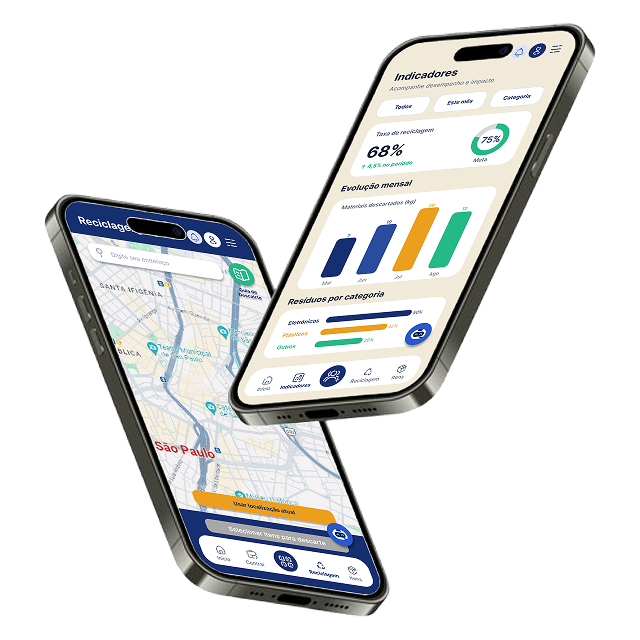
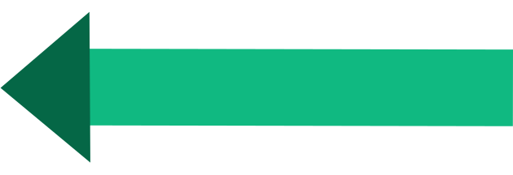

Gerencie resíduos eletrônicos com inteligência
Controle o seu armazenamento e descarte-o com praticidade, segurança e responsabilidade ambiental.

Como
utilizar?
Cadastre
Adicione equipamentos com leitura de código ou manualmente
Armazene
Organize e monitore seus equipamentos de forma inteligente
Receba alertas
Seja avisado sobre prazos críticos e riscos de armazenamento
Gere relatórios
Exporte relatórios completos para auditorias e parcerias

Sobre nós
Tecnologia e sustentabilidade para transformar o descarte.
Somos estudantes de tecnologia do ensino médio dedicados a transformar a gestão de resíduos eletrônicos.
Desenvolvemos uma plataforma prática que ajuda empresas a organizar, acompanhar e garantir o descarte correto do seu lixo eletrônico.
01. RESPONSABILIDADE
Garantimos que cada etapa do descarte seja feita de forma consciente, segura e transparente.
02. ORGANIZAÇÃO
Centralizamos informações e processos para tornar a gestão dos resíduos mais clara e eficiente.
03. PRATICIDADE
Simplificamos a rotina da empresa com soluções intuitivas que facilitam a tomada de decisões.

Nossos planos, desde o Free até o Empresarial.
Escolha o melhor plano para você
Planos para todas as necessidades, sempre pensando em você.
Free
- Scanner
- Dashboard
- Estoque (até 50 itens)
- Relatórios
- Alertas
- Multiusuários
- Suporte
Profissional
- Tudo do plano Free
- Estoque (250 itens)
- Relatórios
- Alertas
- Multiusuários
- Suporte
- Cadastros ilimitados
Empresarial
Plano completo e exclusivo para empresas que buscam ir além.
- Tudo do plano Profissional
- Estoque ilimitado
- Suporte dedicado
- Scanner multidispositivo
- E muito mais!